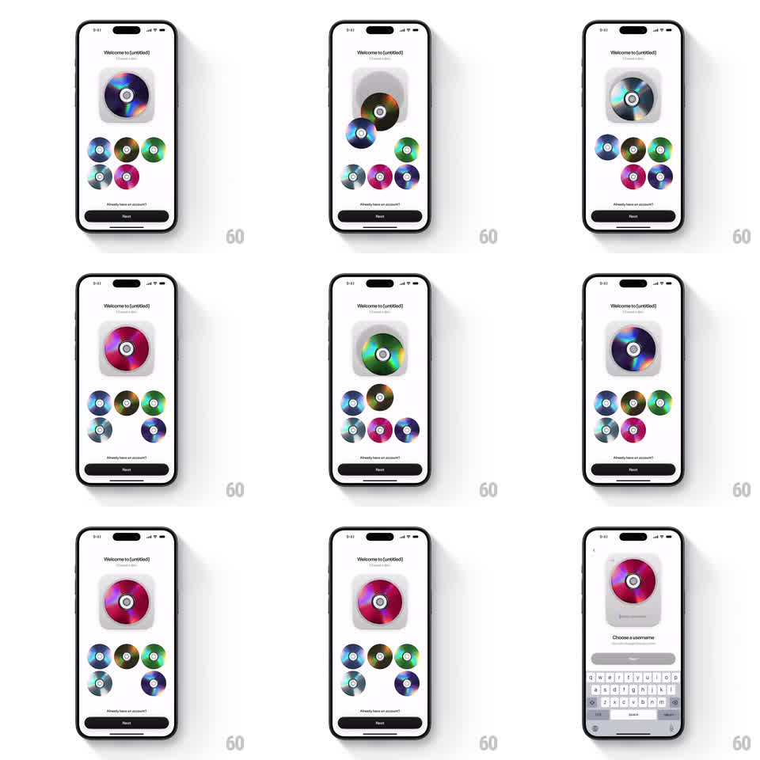

Media
Frame-by-frame

Rebuild this interaction 1:1: a "Choose a disc" onboarding picker - tapping one of five colorful CD discs springs it into the large preview slot at top with a scale-up and spin, the previous preview bouncing back to the grid.

Rebuild this interaction 1:1: a "Choose a disc" onboarding picker - tapping one of five colorful CD discs springs it into the large preview slot at top with a scale-up and spin, the previous preview bouncing back to the grid. ## Integration Integration: stack-agnostic spec - springs given as stiffness/damping, timed motions as duration + curve; map every value to your framework and animation library of choice. ## Scene "Welcome to [untitled] - Choose a disc" screen: a large rounded-square preview slot up top holding one shiny CD, a grid of five small discs beneath (blue, green, purple/red, multicolor variants), "Already have an account?" link, dark Next button. Next leads to a "Choose a username" screen with keyboard. ## Motion spec Pattern: tap-to-select with shared-element disc swap. - Tap a grid disc: it springs from its grid cell into the preview slot, scaling ~2.2x with a slight rotation (~180deg over ~350ms, spring ~300/20) while the previous preview disc shrinks and spins back into the vacated grid cell (same spring, mirrored). - Selected grid cell shows a subtle ring; the incoming disc settles with one overshoot bounce (scale ~1.08 -> 1). - Grid discs jiggle ~2deg on tap of any disc, keeping the picker feeling alive. - Preview slot background (rounded gray card) stays static - only the disc swaps. ## Calibration - The swap is simultaneous and mirrored: no frame where the preview slot is empty. - Rotation is integral to the travel - a straight translate reads flat. ## Reduced motion Discs crossfade between grid and preview without travel or spin. ## Don't miss - The disc that returns to the grid lands in the exact cell the new pick left. - The five grid discs keep their order across swaps; only positions exchanged.